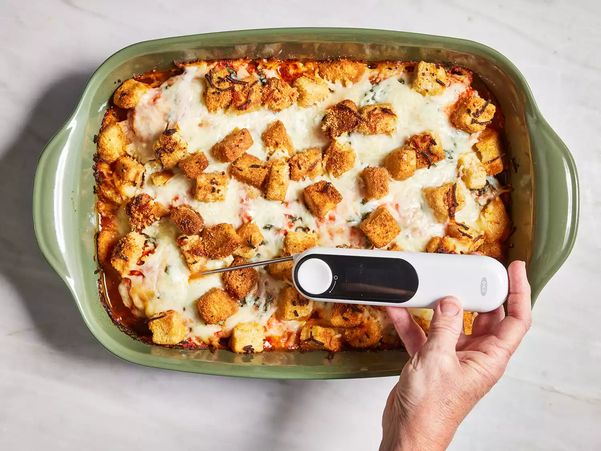

back to Home
Parmesan Chicken Bake

Ingredients
- 2 tablespoons olive oil
- 2 cloves garlic, crushed and finely chopped
- ¼ teaspoon crushed red pepper flakes, or to taste
- 6 skinless, boneless chicken breast halves
- 2 cups prepared marinara sauce
- ¼ cup chopped fresh basil
- 1 (8 ounce) package shredded mozzarella cheese, divided
- ½ cup grated Parmesan cheese, divided
- 1 (5 ounce) package garlic croutons
Directions
- Preheat the oven to 350 degrees F (175 degrees C).
- Coat the bottom of a 9x13-inch casserole dish with olive oil,
and sprinkle with garlic and red pepper flakes.
- Arrange chicken breasts in the bottom of the dish.
- Pour marinara sauce over chicken. Sprinkle basil over
marinara sauce, and top with 1/2 of the mozzarella cheese,
followed by 1/2 of the Parmesan cheese, and croutons.
- Bake in the preheated oven until cheese and croutons are
golden brown and the chicken is no longer pink inside,
about 35 minutes to an hour, depending on the shape and
thickness of your chicken breasts. An instant-read thermometer
inserted into the thickest part of a chicken breast should read
at least 160 degrees F (70 degrees C).

- Serve hot and enjoy!

Nutrition |
Facts |
(per serving) |
| 477 |
22g |
| Calories |
Fat |
| 28g |
40g |
| Carbs |
Protein |